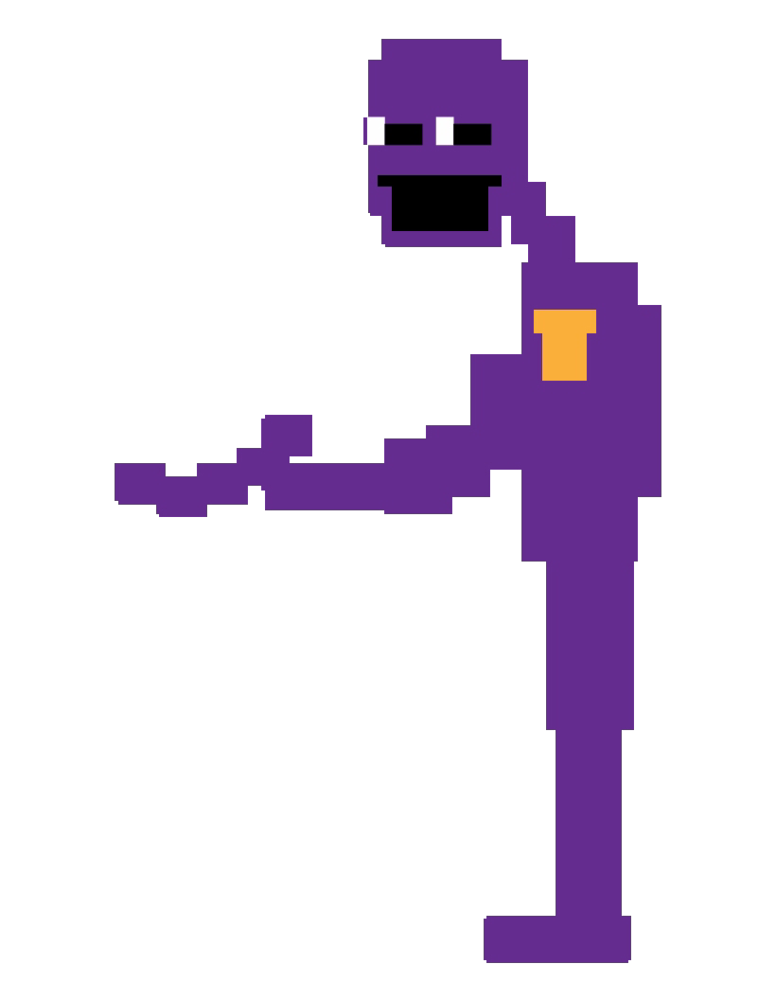
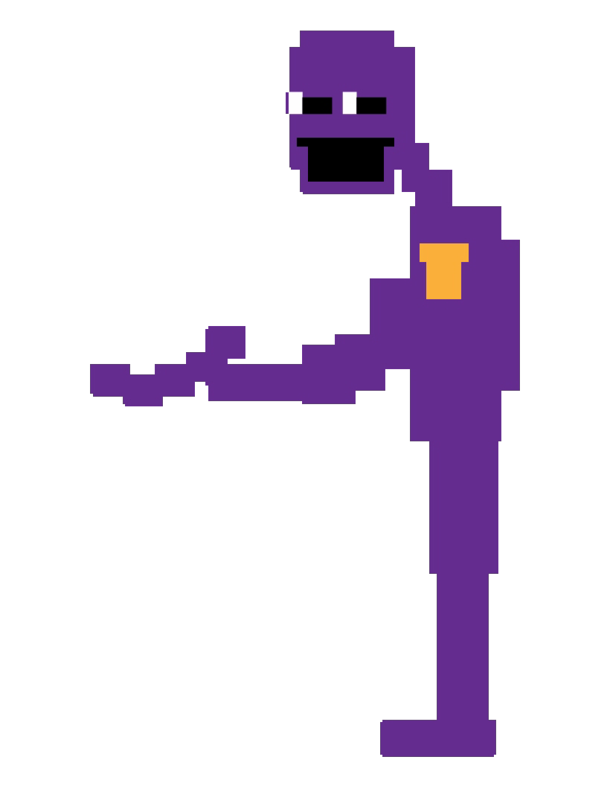

Hi, this is a page for fnaf fans.
1:FNAF lore.
In the year 1983 William Afton whit his friend Henry crete a pizzeria named "Freddy's Family Dinner's". Where the son of William, Evan Afton, dead because of his other son, Michael Afton, who put the head of Evan in the mouth of Fredbear, one animatronic of the pizzeria, causing the close of the pizzeria and causing to William a mental problem... In the year 1987 they opened another pizzeria again named "freddy fazbear's pizza". Charlotte the daughter of Henry, she haved the only bracelet which could say to puppet that could not to go out of the pizzeria by orders of Henry, but that didn't work because one day some childrens caught puppet in her box and took Charlotte to the street and then when william kill her. (William continued kiling childrens)(that's why they closed the pizzeria again)...
how many animatronics exist in all the games
1:freddy.
2:bonnie.
3:chica.
4:foxy.
5:golden freddy.
6:sparky.
7:toy freddy.
8:toy chica.
9:toy bonnie.
10:mangle.
11:puppet
12:ballon boy.
13:shadow bonnie.
14:shadow freddy.
15:withered freddy.
16:withered bonnie.
17:withered chica.
18:withered foxy.
19:fhantom freddy.
20:fhantom chica
21:fhantom puppet
22:fhantom mangle.
23:fhantom ballon boy.
24:springtrap